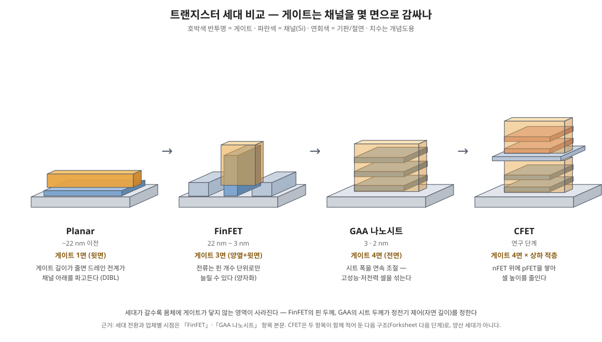

채널을 게이트가 사방으로 감싸는 나노시트 트랜지스터의 구조와 제조 흐름, 그리고 다음 단계.
GAA(Gate-All-Around)는 게이트가 채널을 4면 모두 감싸는 트랜지스터로, 3nm·2nm급 최신 로직 공정의 표준 구조다. 이 장은 GAA가 왜 필요한지, 어떻게 만드는지, 그 중 핵심 단계인 리세스 공정을 다룬다.
GAA란 무엇이고 왜 필요한가
트랜지스터는 게이트 전압으로 채널 전류를 켜고 끄는 스위치다. 게이트 길이가 짧아지면 드레인 전계가 채널에 직접 영향을 줘, 게이트가 꺼져 있어도 전류가 새는 단채널 효과(DIBL, 누설전류 증가)가 생긴다. 게이트가 채널을 감싸는 면이 넓을수록 통제력(정전기적 제어)이 강해져 더 짧은 게이트에서도 확실히 끌 수 있다.
- Planar → FinFET: 채널을 세워 핀(fin)으로 만들고 게이트가 3면을 감쌌다.
- FinFET의 한계: 핀을 더 얇고 높게 만들기 어렵고, 전류를 늘리려면 핀 개수를 늘려야 해 구동력이 정수 단위로만 조절된다(양자화).
- GAA의 해법: 채널을 얇은 판(나노시트)으로 눕혀 여러 장 쌓고 게이트가 각 시트를 완전히 둘러싼다. 시트 폭을 연속적으로 바꿀 수 있어 저전력(좁게)과 고성능(넓게) 설계가 자유롭다.
회사별 이름은 다르다 — 삼성 MBCFET(3nm급 최초 양산), TSMC N2 나노시트, Intel RibbonFET(20A/18A).

GAA 공정 흐름
GAA는 "희생층을 넣어 두었다가 나중에 빼고 그 자리에 게이트를 채우는" 방식으로 만든다. 절연막·반도체·채널 물질을 비롯한 재료 항목들의 물질 대부분이 이 흐름에 등장한다.
- Si/SiGe 초격자 에피 — Si와 SiGe를 수 nm씩 번갈아 쌓는다. Si는 채널, SiGe는 희생층이 된다.
- 핀 패터닝 + STI — 적층막을 핀 모양으로 식각하고 산화막으로 분리한다.
- 더미 poly 게이트 + 게이트 스페이서 — 게이트 자리를 임시로 잡는다.
- S/D 리세스 — 게이트 양옆의 적층을 수직으로 파낸다. (11-3 ①)
- SiGe 측면 리세스 — 드러난 SiGe 끝만 옆으로 파낸다. (11-3 ②)
- 내부 스페이서 증착 + 에치백 — 오목부에 절연막을 채운다. (11-3 ③)
- S/D 에피 — 캐비티에 Si:P(NMOS) / SiGe:B(PMOS)를 키운다.
- 더미 게이트 제거 → 채널 릴리스 — 남은 SiGe 희생층을 Si에 대해 선택적으로 모두 제거해 시트를 띄운다.
- HKMG 증착 — 시트 사이 수 nm 틈까지 ALD로 HfO₂와 일함수 금속을 감싸듯 채운다.
- MOL 이후 — 게이트 캡, 컨택 형성으로 이어진다.
공정 난제와 다음 단계
| 난제 | 관련 단계 | 왜 어려운가 |
|---|---|---|
| SiGe : Si 선택 식각 | 측면 리세스, 채널 릴리스 | 측면으로만 수십 nm를 등방적으로 파면서 Si 손실·손상은 거의 없어야 함 |
| 리세스 깊이 균일도 | 측면 리세스 | 층마다 깊이가 다르면 시트마다 실효 게이트 길이가 달라짐 |
| 에피 두께·조성 균일도 | 초격자 에피 | 두께·Ge 농도 편차가 그대로 소자 편차와 식각 속도 편차로 이어짐 |
| 좁은 틈 속 ALD | HKMG | 시트 위·아래·옆의 막 두께가 같아야 문턱전압이 맞음 |
| 내부 스페이서 형상 | 증착 + 에치백 | 오목부를 빈틈없이 채우고 바깥은 깨끗이 걷어내야 함 |
다음 구조. nFET과 pFET 사이에 절연 벽을 세워 간격을 줄이는 Forksheet, nFET 위에 pFET을 수직으로 쌓는 CFET이 연구되고 있다. 둘 다 GAA의 시트 구조와 희생층·리세스 기법을 그대로 확장한다.
참고 논문
- Stacked nanosheet gate-all-around transistor to enable scaling beyond FinFET — Loubet et al., Symp. VLSI Technol. (2017). 나노시트 GAA의 첫 실증 보고
- Study of Silicon Nitride Inner Spacer Formation in Process of Gate-all-around Nano-Transistors — Li et al., Nanomaterials 10, 793 (2020). SiN 내부 스페이서의 증착·에치백 공정 실험, 오픈액세스
- Interest of SiCO low k=4.5 spacer deposited at low temperature (400°C) in the perspective of 3D VLSI integration — Benoit et al., IEDM (2015), 8.6.1. SiN을 대체하는 저온 SiCO 스페이서
설계 변수 — 시트 치수가 소자를 정한다
| 변수 | 전형 범위 (교재·업계 전형값) | 늘리면 | 줄이면 |
|---|---|---|---|
| 시트 두께 (Tsi) | 약 5~7 nm | 구동전류 증가, 양자 구속 완화 | 정전기 제어 개선, 이동도·Vt 편차 민감 |
| 시트 폭 (W) | 수십 nm, 용도별 가변 | 유효 채널 폭 증가 → Ion 증가 | 누설·면적 감소, 저전력 설계 |
| 시트 장수 (스택 수) | 대개 3장 | 단위 면적당 전류 증가 | 공정 난도·기생 성분 증가 |
| 시트 간격 (수직 피치) | 대략 10 nm 안팎의 게이트 공간 | HKMG 금속이 들어갈 틈 확보 | 적층 밀도 증가, 게이트 충진 난도 상승 |
정전기 제어의 핵심은 완전 공핍이다. 시트 두께가 얇으면 채널 전체가 게이트 전계 안에 들어와 몸체 어딘가에서 전위가 떠 있는 영역이 남지 않는다. 그 결과 서브스레숄드 기울기가 이상값(상온 약 60 mV/dec)에 가까워지고 DIBL이 작아진다. FinFET에서 핀 두께가 하던 역할을 시트 두께가 이어받은 셈이며, 두께 편차가 곧 Vt 편차가 되므로 초격자 에피의 두께 균일도가 소자 산포를 정한다.
폭의 연속 조절이 FinFET과의 결정적 차이다. FinFET은 핀 개수로만 전류가 양자화됐지만, 나노시트는 폭을 리소그래피로 연속 조절할 수 있어 같은 셀 높이 안에서 고성능 셀(넓은 시트)과 저전력 셀(좁은 시트)을 섞는 DTCO가 가능하다.
스택 수와 간격의 트레이드오프
시트를 더 쌓으면 풋프린트당 유효 폭이 늘어 성능은 좋아지지만 대가가 따라온다. 초격자가 두꺼워지면 S/D 리세스와 채널 릴리스의 종횡비가 커지고, 아래쪽 시트일수록 릴리스 식각과 HKMG 충진이 어렵다. 시트 간격이 좁으면 일함수 금속을 넣을 공간이 부족해 multi-Vt 구현이 어려워지고(→ 게이트 스택 (HKMG)의 다이폴 방식), 간격이 넓으면 적층 전체 높이가 커져 S/D 에피와 컨택 공정이 힘들어진다. 아래 시트와 기판 사이의 최하단 공간 처리(기생 채널 억제를 위한 절연 구조)도 스택 설계의 일부다.
CFET으로 가는 길
CFET은 nFET 시트 스택 위에 pFET 스택을 수직으로 얹어 셀 높이를 줄이는 구조다. GAA의 초격자·릴리스·내부 스페이서 기술을 그대로 쓰지만, 위쪽 소자를 만들 때 아래쪽 소자가 견딜 열 예산, 상하 소자의 게이트·컨택 분리, 웨이퍼 뒤집어 붙이는 본딩 방식 등이 새 난제가 된다. Forksheet은 그 중간 단계로, n/p 사이에 절연 벽을 세워 간격을 FinFET 수준까지 좁히는 설계다. 두 구조 모두 "쌓는 방향으로 미세화를 계속한다"는 점에서 나노시트의 연장선에 있다.
근거
- 공정 흐름과 첫 실증: Loubet et al., Symp. VLSI Technol. (2017) — 아래 참고 논문.
- 시트 두께·폭·스택 수 등 본문의 치수는 특정 업체의 양산 실측이 아니라 학회·교재에서 통용되는 전형 설계 범위다. 실제 값은 노드와 업체마다 다르며 비공개인 경우가 많다.